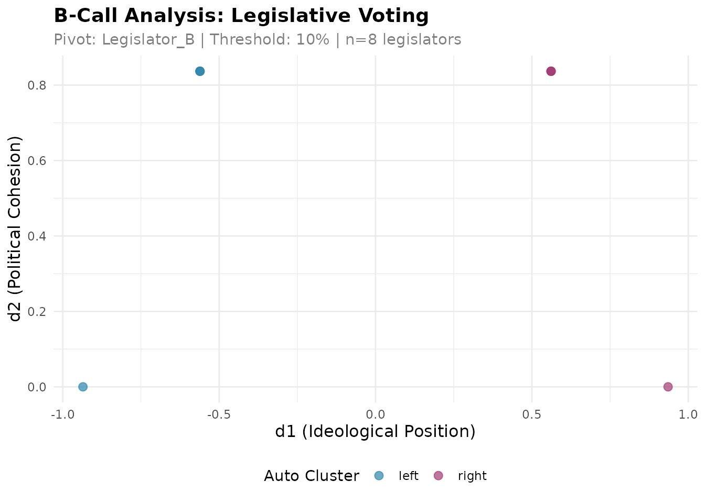
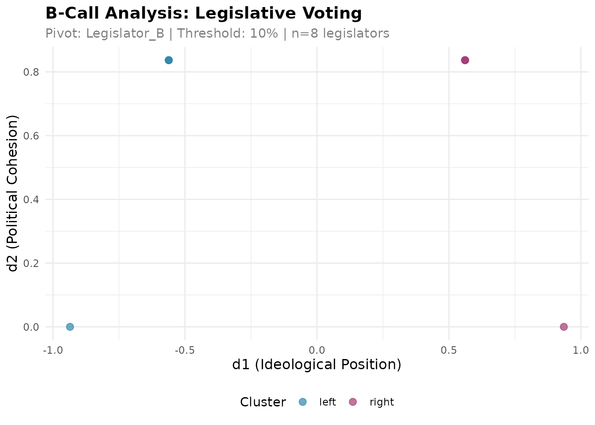

Introduction to B-Call Analysis
Daniel Alcatruz
2026-10-28
Source:vignettes/bcall-introduction.Rmd
bcall-introduction.RmdWhat is B-Call?
B-Call is a methodology for analyzing legislative voting data that integrates two key dimensions:
- d1 (Ideological Position): Measures the left-right political spectrum position of each legislator
- d2 (Political Cohesion): Measures how consistently a legislator votes with their ideological bloc
Unlike traditional methods that only capture ideological position, B-Call provides a richer understanding of legislative behavior by simultaneously measuring both ideology and voting discipline.
Citation
If you use this package in your research, please cite:
Toro-Maureira S, Reutter J, Valenzuela L, Alcatruz D and Valenzuela M (2025). B-Call: integrating ideological position and voting cohesion in legislative behavior. Frontiers in Political Science 7:1670089. doi:10.3389/fpos.2025.1670089
Two Principles of B-Call
The bcall package implements two main approaches:
Principle 1: Automatic Clustering
Use bcall_auto() when you only have rollcall voting
data. The function automatically clusters legislators into two groups
based on their voting patterns.
Principle 2: User-Provided Clustering
Use bcall() when you have external information about
legislator groupings (e.g., party affiliation, coalition membership).
You provide both the rollcall data and the clustering assignment.
Data Format Requirements
Rollcall Data
Your rollcall data must be a data.frame with:
- Legislators as rows (with rownames)
- Votes as columns (any column names)
-
Values:
1(Yes),-1(No),0(Abstention),NA(Absent)
Example:
rollcall <- data.frame(
vote_1 = c(1, -1, 1, -1, 1, -1, 1, -1),
vote_2 = c(1, -1, 1, -1, 1, -1, 1, -1),
vote_3 = c(-1, 1, -1, 1, -1, 1, -1, 1),
vote_4 = c(1, 1, -1, -1, 1, 1, -1, -1),
vote_5 = c(1, -1, 1, 1, -1, -1, 1, -1),
row.names = paste0("Legislator_", LETTERS[1:8])
)
head(rollcall)
#> vote_1 vote_2 vote_3 vote_4 vote_5
#> Legislator_A 1 1 -1 1 1
#> Legislator_B -1 -1 1 1 -1
#> Legislator_C 1 1 -1 -1 1
#> Legislator_D -1 -1 1 -1 1
#> Legislator_E 1 1 -1 1 -1
#> Legislator_F -1 -1 1 1 -1Clustering Data (Principle 2 only)
For bcall(), you also need clustering data:
- A
data.framewith exactly one column namedcluster - Rownames matching the rollcall data
- Exactly 2 unique values (can be any labels: “left”/“right”, “government”/“opposition”, etc.)
clustering <- data.frame(
cluster = c("left", "right", "left", "right",
"left", "right", "left", "right"),
row.names = paste0("Legislator_", LETTERS[1:8])
)
head(clustering)
#> cluster
#> Legislator_A left
#> Legislator_B right
#> Legislator_C left
#> Legislator_D right
#> Legislator_E left
#> Legislator_F rightExample 1: Automatic Clustering
Let’s analyze our sample rollcall data using automatic clustering:
# Run automatic clustering analysis
results_auto <- bcall_auto(
rollcall = rollcall,
distance_method = 1, # 1 = Manhattan, 2 = Euclidean
pivot = "Legislator_B", # Reference legislator; their side of d1 is positive
threshold = 0.1, # Minimum 10% participation
verbose = FALSE
)
# View results
head(results_auto$results)
#> d1 d2 legislator auto_cluster
#> Legislator_A -0.9354143 0.00000 Legislator_A left
#> Legislator_B 0.5612486 0.83666 Legislator_B right
#> Legislator_C -0.5612486 0.83666 Legislator_C left
#> Legislator_D 0.5612486 0.83666 Legislator_D right
#> Legislator_E -0.5612486 0.83666 Legislator_E left
#> Legislator_F 0.5612486 0.83666 Legislator_F rightThe results contain:
-
d1: Ideological position (higher values = closer to the pivot’s side) -
d2: Political cohesion (lower values = more cohesive) -
auto_cluster: Automatically assigned cluster -
legislator: Legislator name
Visualizing Results
# Static plot
plot_bcall_analysis(results_auto)
# Interactive plot (not shown in vignette)
plot_bcall_analysis_interactive(results_auto)Example 2: User-Provided Clustering
When you have external information about legislator groups:
# Run analysis with user-defined clustering
results_user <- bcall(
rollcall = rollcall,
clustering = clustering,
pivot = "Legislator_B", # Reference legislator from "right" cluster
threshold = 0.1,
verbose = FALSE
)
# View results
head(results_user$results)
#> d1 d2 legislator cluster
#> Legislator_A -0.9354143 0.00000 Legislator_A left
#> Legislator_B 0.5612486 0.83666 Legislator_B right
#> Legislator_C -0.5612486 0.83666 Legislator_C left
#> Legislator_D 0.5612486 0.83666 Legislator_D right
#> Legislator_E -0.5612486 0.83666 Legislator_E left
#> Legislator_F 0.5612486 0.83666 Legislator_F right
# Plot with user clustering
plot_bcall_analysis(results_user)
Understanding the Pivot
The pivot is a reference legislator that defines the orientation of the d1 dimension:
- The pivot’s cluster is labeled as “right”
- The other cluster becomes “left”
- If you don’t specify a pivot in
bcall_auto(), the cluster that contains the first row of the rollcall is labelled “right” and the pivot is taken from it. The sign of d1 is then arbitrary, and the function warns about it
Important: The pivot doesn’t change the underlying analysis, only the interpretation. If your d1 values seem inverted, you can either:
- Choose a pivot from the opposite cluster, or
- Simply interpret d1 values with reversed signs
Real-World Example: Loading Data from CSV
Here’s how to load and analyze real legislative data:
library(readr)
library(dplyr)
library(tibble)
# Load rollcall data from CSV
rollcall_data <- read_csv("votes.csv") %>%
rename(legislator = 1) %>% # First column is legislator names
column_to_rownames("legislator")
# Option 1: Automatic clustering
results <- bcall_auto(rollcall_data)
# Option 2: With party information
clustering_data <- read_csv("legislators.csv") %>%
select(legislator, party) %>%
mutate(cluster = ifelse(party %in% c("PartyA", "PartyB"),
"coalition", "opposition")) %>%
select(legislator, cluster) %>%
column_to_rownames("legislator")
results <- bcall(rollcall_data, clustering_data,
pivot = "SomeSpecificLegislator")Interpreting Results
d1 (Ideological Position)
- Positive values: The pivot’s side (right-wing when the pivot is a right-wing legislator)
- Negative values: The opposite side
- Magnitude: Distance from the center
d2 (Political Cohesion)
- Low values (close to 0): High cohesion - votes consistently with their bloc
- High values: Low cohesion - frequently votes against their bloc
Example Interpretation
# Find most extreme positions
res <- results_auto$results
head(res[order(res$d1), ], 3) # Most left-wing
#> d1 d2 legislator auto_cluster
#> Legislator_A -0.9354143 0.00000 Legislator_A left
#> Legislator_C -0.5612486 0.83666 Legislator_C left
#> Legislator_E -0.5612486 0.83666 Legislator_E left
head(res[order(res$d1, decreasing = TRUE), ], 3) # Most right-wing
#> d1 d2 legislator auto_cluster
#> Legislator_H 0.9354143 0.00000 Legislator_H right
#> Legislator_B 0.5612486 0.83666 Legislator_B right
#> Legislator_D 0.5612486 0.83666 Legislator_D right
head(res[order(res$d2), ], 3) # Most cohesive
#> d1 d2 legislator auto_cluster
#> Legislator_A -0.9354143 0.00000 Legislator_A left
#> Legislator_H 0.9354143 0.00000 Legislator_H right
#> Legislator_B 0.5612486 0.83666 Legislator_B rightParameters
Common Parameters
-
threshold: Minimum participation rate (0.0-1.0). Legislators below this threshold are excluded. -
verbose: Whether to print progress messages (default: TRUE)
Advanced: Accessing Components
The results object contains several components:
# Main results data frame
head(results_auto$results)
#> d1 d2 legislator auto_cluster
#> Legislator_A -0.9354143 0.00000 Legislator_A left
#> Legislator_B 0.5612486 0.83666 Legislator_B right
#> Legislator_C -0.5612486 0.83666 Legislator_C left
#> Legislator_D 0.5612486 0.83666 Legislator_D right
#> Legislator_E -0.5612486 0.83666 Legislator_E left
#> Legislator_F 0.5612486 0.83666 Legislator_F right
# Metadata about the analysis
str(results_auto$metadata)
#> List of 11
#> $ principle : chr "PRINCIPLE 1: Auto-clustering"
#> $ clustering_method : chr "Manhattan"
#> $ distance_method : num 1
#> $ pivot : chr "Legislator_B"
#> $ pivot_participation : chr "100.0%"
#> $ threshold : num 0.1
#> $ n_legislators_original: int 8
#> $ n_legislators_analyzed: int 8
#> $ n_votes : int 5
#> $ cluster_distribution : 'table' int [1:2(1d)] 4 4
#> ..- attr(*, "dimnames")=List of 1
#> .. ..$ : chr [1:2] "left" "right"
#> $ date_analyzed : Date[1:1], format: "2026-10-28"
# Original BCall R6 object (for advanced users)
class(results_auto$bcall_object)
#> [1] "BCall" "R6"Tips and Best Practices
Data Quality: Ensure your rollcall data has enough votes (>20) and legislators (>10) for meaningful analysis
-
Pivot Selection: Choose a pivot legislator who:
- Has high participation (few absences)
- Represents a clear ideological position
- Is well-known in the context
-
Threshold Setting:
- Default 0.1 (10%) works for most cases
- Increase for higher quality (excludes occasional participants)
- Decrease to include more legislators
Clustering Values: When using
bcall(), you can use any 2 values for clustering (“A”/“B”, “government”/“opposition”, “izquierda”/“derecha”, etc.)
Getting Help
For more information:
- Package documentation:
?bcall_auto,?bcall - GitHub repository: https://github.com/bcallr/bcall
- Report issues: https://github.com/bcallr/bcall/issues